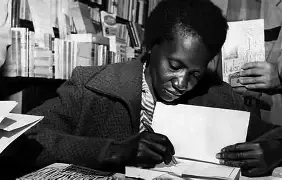
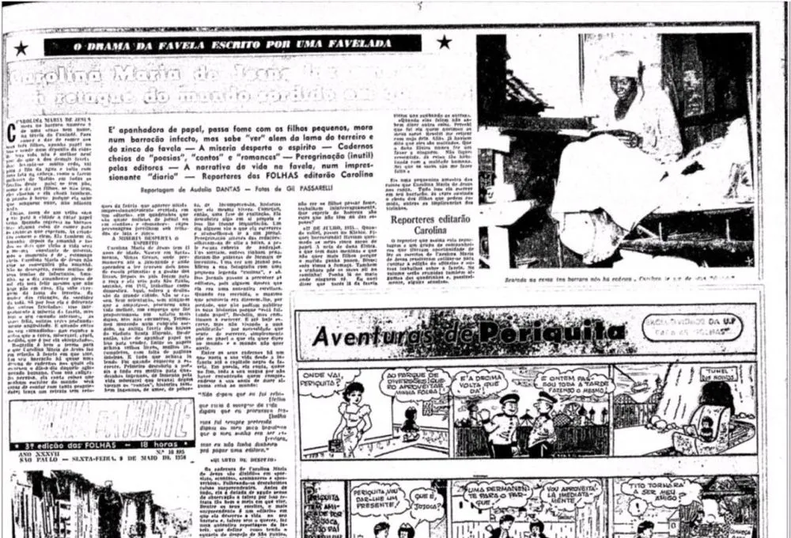

Aristocratie in Child of The DArk
3 mei 2026
Tijdens het bestuur van de toenmalige gouverneur van de staat São Paulo, Jânio Quadros, beschrijft de auteur hoe, in een dagelijks leven van ellende, buren allen even arm vaak vijandig tegenover elkaar worden, in een scenario waarin “de armen de armen haten”. Het boek laat zien wat we horizontale rivaliteit kunnen noemen, mensen die, in de woorden van Paulo Freire in Pedagogie van de Onderdrukten: “De onderdrukten, in plaats van hun strijd te richten tegen degene die hen onderdrukt, nemen de waarden en gedragingen van de onderdrukker over.” Dit kan vijandigheid opwekken tegen hun gelijken, dat wil zeggen de arbeidersklasse, waartoe Carolina als papierverzamelaar behoorde. Deze klasse wordt dan verdeeld in segmenten die met elkaar concurreren, waardoor hun collectieve kracht verzwakt.

Carolina toont ressentiment tegenover haar buren, vooral met betrekking tot alcoholgebruik, ruzies en naaktheid in haar gemeenschap. Anders dan de representatie die zij later in het boek krijgt als een sterke en strijdlustige vrouw, was zij oorspronkelijk onderdanig en passief. Dit verhindert haar om een aristocraat te worden in de zin van Nietzsche. Ressentiment ontstaat uit onmacht en keert de waarden van kracht en zwakte om. De Nietzscheaanse aristocraat daarentegen reageert niet op de wereld met ontkenning of jaloezie: hij bevestigt het leven zelf.
In 1960 werden Carolina’s notitieboeken georganiseerd en bewerkt, met aanpassingen die haar imago als sterke en hardwerkende vrouw versterkten, beter passend bij het profiel dat de uitgeversmarkt verlangde. Deze houding wordt nog duidelijker in haar boek Het Bakstenen Huis. In het boek vindt men opmerkelijke zinnen zoals: “In ons land wordt alles zwakker. Geld is zwak. Democratie is zwak en politici zijn uiterst zwak. En alles wat zwak is zal op een dag sterven.” Deze zin voorspelt de militaire staatsgreep die in de volgende jaren zou plaatsvinden.

Een andere opvallende passage is: “Ik denk zelfs dat het haar van zwarte mensen beter in model blijft dan dat van witte mensen. Want zwart haar, waar je het ook zet, blijft zitten. Het is gehoorzaam. En het haar van witte mensen, je hoeft alleen je hoofd te schudden en het raakt uit model. Het is ongedisciplineerd. Als reïncarnaties bestaan, wil ik altijd als zwarte terugkomen.”